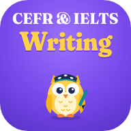

CEFR & IELTS Writing with SayyoraIELTS Writing tekshirish onlayn: Task 1 va Task 2
IELTS Writing'ni onlayn tekshiring: Task 1 (Academic grafik va diagrammalar yoki General Training xati) va Task 2 (esse). Matningizni yozasiz yoki daftar rasmini yuklaysiz, sun'iy intellekt (AI) uni IELTS'ning 4 ta mezoni bo'yicha baholaydi va xatolarni o'zbekcha tushuntiradi.
Platformada nimalar bor
- Task 1 Academic: 48 ta savol: line graph, bar chart, pie chart, table, process va map. Har birida namuna javob va manba ko'rsatilgan.
- Task 1 General Training: 40 ta xat (formal, semi-formal, informal).
- Task 2 esse: 58 ta savol: opinion, discussion, advantages and disadvantages, problem and solution.
- Mock testlar: 60 daqiqalik to'liq imtihon (Task 1 + Task 2), oxirida umumiy Writing bandi.
- Rasm bilan tekshirish: qo'lda yozilgan matn yoki topshiriq (grafik) rasmini yuklang, AI o'zi o'qiydi.
- Darslar: Band 4 dan Band 9 gacha, qadamma-qadam xarita.
IELTS Writing bandi qanday hisoblanadi
Har bir topshiriq 4 mezon bo'yicha baholanadi: Task Achievement (Task 2 da Task Response), Coherence and Cohesion, Lexical Resource va Grammatical Range and Accuracy. Task 2 Task 1 dan ikki baravar muhim:
Writing ≈ (Task 1 + 2 × Task 2) ÷ 3, yarim bandgacha yaxlitlanadi. Masalan, Task 1 = 6 va Task 2 = 7 bo'lsa, Writing ≈ 6.5.
Overall (umumiy) IELTS bali esa Listening, Reading, Writing va Speaking'ning o'rtachasi. Shuning uchun Overall 7.5 bo'lsa ham Writing 6 bo'lishi mumkin.
Yangi alifboda qisqacha
IELTS Writing'ni onlayn tekşiring: Task 1 va Task 2. AI ball beradi, xatolarni özbekça tuşuntiradi. Namuna javoblar, mock testlar va qadamma-qadam darslar bor. Bepul.
Savol-javob
IELTS Writing'ni qanday tekshirsa bo'ladi?
Platformada Task 1 yoki Task 2 ni tanlang, javobingizni yozing yoki rasmini yuklang va Tekshirish tugmasini bosing. AI band, mezonlar bo'yicha baho va xatolarning o'zbekcha izohini beradi.
Task 1 da 5 oldim, bu nima degani?
Bu faqat Task 1 bandi. Rasmiy natijada Task 1 va Task 2 alohida yozilmaydi: Writing ≈ (Task 1 + 2 × Task 2) ÷ 3. Platforma har bir bandning ma'nosini va keyingi bandga chiqish uchun qaysi mezonni ko'tarish kerakligini ko'rsatadi.
Bu rasmiy IELTS bahosimi?
Yo'q. Bu IELTS uslubidagi mashq bahosi. Platforma IELTS tashkilotlari bilan bog'liq emas.
Pullikmi?
Yo'q, platforma bepul.
Muallif: Sayyora Soleyeva, Samarqand davlat chet tillar instituti magistranti. Aloqa: soleyevasayyora7@gmail.com, Telegram @Sayyora_Sunnatilloyevna. Ballar mashq uchun taxminiy, rasmiy natija emas.